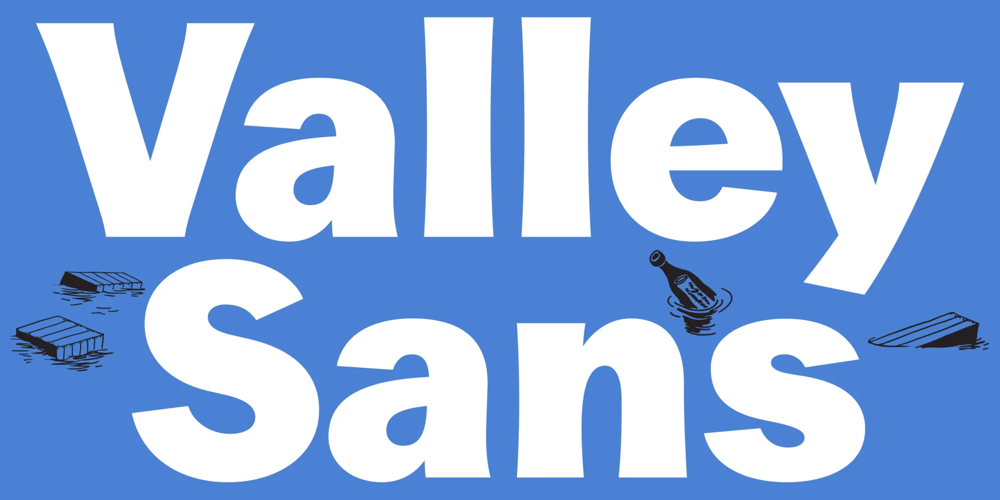
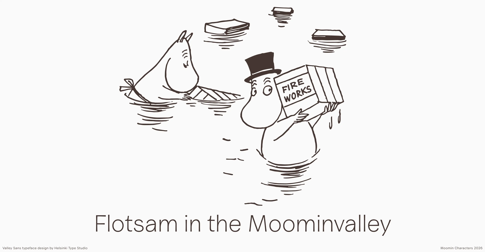
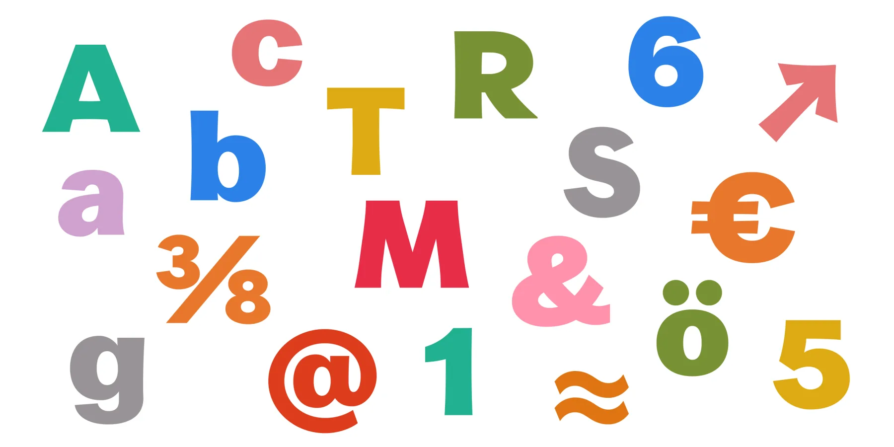
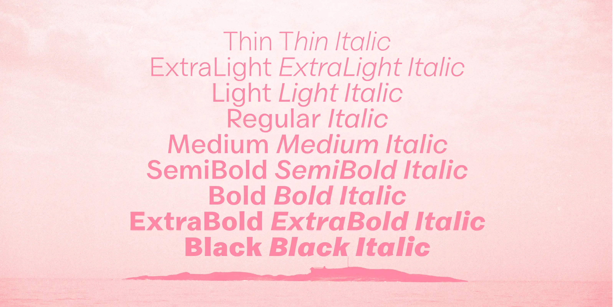

Valley Sans is a clear, versatile typeface developed for Moomin Characters. The design draws from Tove Jansson's original lettering, the typographic landscape of her era, and details from life in the Finnish archipelago.
The Moomins, beloved characters created by Tove Jansson, are known for wit, warmth, and timeless charm. Valley Sans translates that spirit into a contemporary type system for brand communication, publishing, and digital interfaces while preserving a distinct connection to the Moomin visual world.

A central challenge in developing the typeface was that Jansson's lettering references are primarily uppercase. To build a complete contemporary family, the lowercase and broader stylistic system were developed through archival research into compatible historical models. The design team focused on late-1800s American modern gothic typefaces, chosen for their warmth, practicality, and expressive charm.

This historical direction also reflects the archipelago setting connected to the Moomin world. In the Finnish archipelago, American letterforms can be seen on cargo crates and other objects that have drifted ashore over time. This idea of flotsam, where distant typographic influences arrive by sea and settle into local visual culture, became part of the conceptual foundation of Valley Sans.
The result is a typeface rooted in heritage and storytelling, designed for clarity, rhythm, and usability across styles.

Valley Sans is delivered as a variable family with Weight and Italic axes, covering styles from Thin to Black in both roman and italic. This structure provides a broad expressive range while keeping behavior consistent across editorial and interface contexts.
The family is currently developed for Latin-script use and is intended to support a wide range of contemporary brand and publishing needs in digital and print environments.
Valley Sans was designed by Niklas Ekholm for Moomin Characters in collaboration with Lari Mörö at Helsinki Type Studio.
Images courtesy of Moomin Characters.